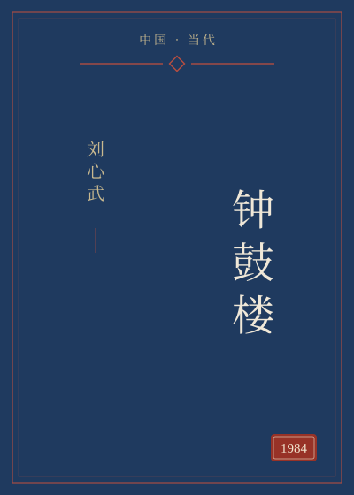
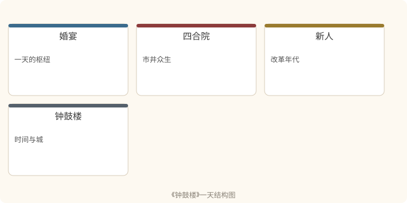

钟鼓楼
一、基本信息
| 作者 | 刘心武 |
|---|---|
| 成书/出版 | 第二届茅盾文学奖获奖作品（中国作家网官方名单 C012：第二届1982—1984、人民文学出版社；出版具体日期待核） 历届茅盾文学奖获奖作品一览（中国作家网）（官方文学机构） |
| 国别/地区 | 中国 |
| 时代 | 现当代 · 当代 |
| 体裁 | 长篇小说 |
| 语言 | 汉语（白话） |

《钟鼓楼》一天结构图（主题·结构图）
二、创作背景
中国作家网（C023）：作者1984年全年写作《钟鼓楼》并参评第二届茅奖；'得知获奖消息的那天'。
题材：北京钟鼓楼一带的市井众生——薛家婚宴一日（情节通说待核）。
三、内容脉络
一天之内：薛家婚宴前后的人物群像与四合院众生（通说待核）。
老北京的手艺、行当与新人新事并行（通说待核）。
四、主要人物表
| 人物 | 身份 | 说明 |
|---|---|---|
| 薛大娘一家 | 婚宴主家 | 叙事枢纽（通说待核） |
| 荀磊等 | 新代青年 | 改革年代的年轻人（通说待核） |
五、主题与艺术特点
- 京味浮世绘：一天写尽一座城（通说）。
- 大杂院的伦理与变迁（通说）。
- 结构精细：钟点推进的一天体（通说待核）。
六、影响与评论
- 中国作家网官方名单：第二届茅盾文学奖获奖作品、人民文学出版社（C012）。
历届茅盾文学奖获奖作品一览（中国作家网）（官方文学机构） - 中国作家网：获茅奖'遮蔽了长篇《四牌楼》'——作者自评创作谱系（C023）。
刘心武：到了80岁，不需要有写作计划（中国作家网）（官方文学机构）
七、阅读建议
难点
- 人物众多——先画人物表。
- 北京方言与行当注释。
- 《钟鼓楼》（人民文学出版社，C012 官方名单口径）。
对照《骆驼祥子》《茶馆》：京味文学三代。
八、待核实
- 薛家婚宴情节细节核对。
- 1985年出版日期核对。
- 同名话剧改编细节待核。
本页主要来源
刘心武的其他收录作品：钟鼓楼